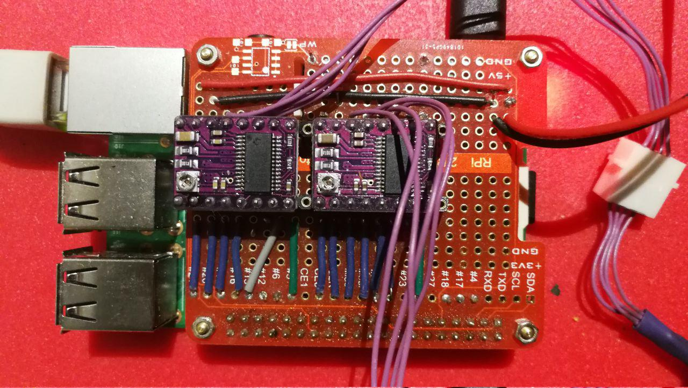

Raspberry Drivers¶
rpiDRV8825Hat¶
This is a DIY Raspberry Pi Hat base on the popular stepper control chip DRV8825
{kind=link}
API¶
DIY DRV8825 driver Hat interface.
This board has two DRV8825 able to driver 2 motors See hardware on termiteOS/driver/rpi/hardware
- INTERFACE TO OTHER MODULES:
- motorBeta
- pinout
- microsteps
- clutch()
- reset()
- sleep()
- set_microsteps(microsteps)
- sync(motorBeta)
rpiSpeedPWM¶
A PWM driver
API¶
Raspberry PWM motor driver.
-
class
termiteOS.drivers.rpi.rpiSpeedPWM.rpiSpeedPWM(driverID, microsteps, FullTurnSteps, gear=1, name='Axis', raspberry='localhost')[source]¶ This class do the PWM control calling the underlying pigpiod daemon.
Note
Up to dates only PID control is implemented.
-
clutch(ON_OFF)¶ Engage or Disengage(free spinnig) the motors
-
fault(gpio, level, tick)¶ Callback function to check internal driver faults
-
gotoEnd¶ True if the axis finally arrive to destination(_SetPoint), False otherwise
-
isStopped¶ True if is stopped, False otherwise
-
pos¶ Actual position (Corrected motorBeta)
-
reset(ON_OFF)¶ Reset the driver circuit
-
set_dir(dir)¶ Set the direction of motion
-
set_microsteps(microsteps)¶ Set microstepping mode of the driver
-
sleep(ON_OFF)¶ Sleep or wake up the driver circuit
-
stepcounter(gpio, level, tick)¶ Callback function to update internal position counter
-
test()¶ Test the Hat sending steps
-